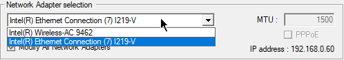
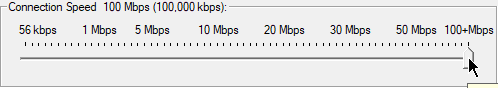
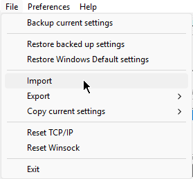
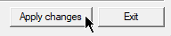

1. Run the
"TCPOptimizer.exe"
as
Admin
Or just go here:
https://www.speedguide.net/files/TCPOptimizer.exe
2. Select your Network adapter in the
"Network Adapter selection"
and make sure the
"Modify All Network Adapters"
is ticked

3. Drag the
"Connection Speed"
slider to the most right

4. Click on
"File"
, then
"Import"

5. Import the
"autik-custom.spg"
6. Click on
"Apply"
